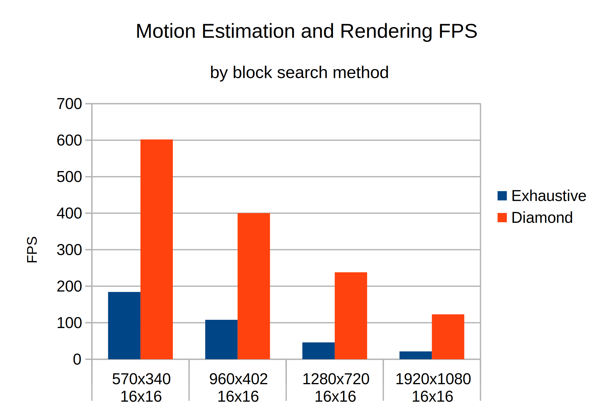
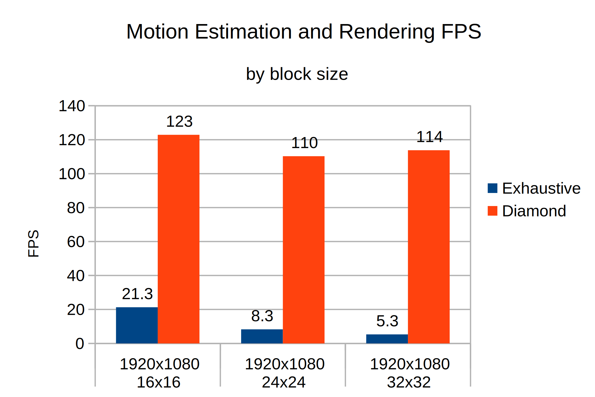

Motion Interpolation with OpenCL
Example
Motivation / Prior Art
- Why? 60 > 24. Panning in movies looks horrible
- TV features like Motion Boost / TruMotion (controversial)
- Smooth Video Project (svp-team.com)
- Video Compression
- Slow Motion in Adobe Premiere etc.
Overview
Motion Estimation via Block Matching:
Find most similar 16x16 pixel block close to current block
Render Frame
Move by motion vectors and blend blocks
All videos are screen recordings (real time!)
Motion Estimation
For every OpenCL local 2D group:
- Load a 3x3 grid of 16x16 blocks of both images into local memory
- Compute the SAD for moving the center block to every possible offset (Sum of absolute differences)
- Bias for e.g. consistency with neighbourhood
- Do everything a second time for backwards motion



Motion Estimation Example
Motion Vectors
Diamond Block Search
Exhaustive search is slow. Lots of research on search patterns.
Frame Rendering
- Shift Motion vectors by themselves by some factor depending on time
- For every output pixel, read input pixel shifted by negative motion vector * deltatime
- Do this four times (img1 forward, img1 backward, img2 forward, img2 backward)
- Blend pixels depending on deltatime and visibility
Shift Forward Motion Vectors
Rendered
Full Debug Output
Movie Example 1 (slowed 50%)
Movie Example 2 (slowed 50%)
Benchmark
Measuring everything between glFinish() and clFinish()

